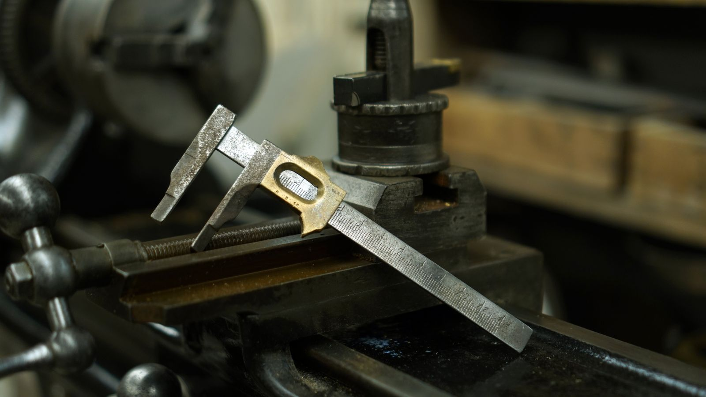

Quando serve
- Un prototipo validato deve diventare un primo lotto ripetibile.
- La capacità dei fornitori o i lead time sono incerti.
- Le registrazioni di ispezione non supportano la vostra decisione di accettazione.
- Le deviazioni vengono gestite in modo informale tra le persone.
Cosa facciamo
Potete acquistare una sola di queste attività o più attività collegate. Il perimetro si concorda con voi prima di iniziare.
- 01
Readiness
Maturità dei disegni, caratteristiche critiche, materiali e volumi richiesti verificati prima di ordinare qualsiasi cosa.
- 02
Capacità e sourcing
Cicli di processo, capacità qualificata e responsabilità dei fornitori definiti.
- 03
Produrre e ispezionare
Lavorazioni meccaniche, carpenteria, saldatura, assemblaggio e ispezioni coordinati rispetto ai criteri concordati.
- 04
Ramp-up e passaggio di consegne
Deviazioni riesaminate, processo stabilizzato e registrazioni di produzione consegnate.

Cosa ricevete
Documenti che potete rivedere, conservare e usare dopo la consegna. Risultati come risparmi di tempo o di costo si misurano rispetto al vostro punto di partenza.
- Checklist di readiness
- Piano di produzione e di capacità
- Piano di ispezione
- Report di ispezione e collaudo
- Registrazioni delle non conformità e relative decisioni
- Production Release Pack
Chi realizza
Una società è il vostro contratto e il vostro referente. Le altre lavorano dietro di lei su pacchetti di lavoro definiti.
Solutions · Italia
Coordina tempi e accettazione per i clienti europei.
Engineering & Production · India
Produce o attiva capacità qualificata.
Come si parte di solito
Verifica della readiness produttiva: i gap tra il vostro progetto e un lotto ripetibile, elencati e assegnati prima di acquistare qualsiasi materiale.
Spesso combinato con Engineering & Industrialisation · Trade & Logistics.